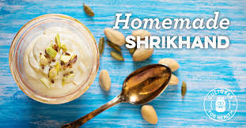

श्रीखंड
आपले हृदय नेहमी आनंदाने भरते
श्रीखंड कॅल्शियम, फॉस्फरस, व्हिटॅमिन बी 1, बी 2 आणि बी 12 चे समृद्ध स्रोत आहे.
भेसळ टाळण्यासाठी घरी बनवून त्यातील अनेक आरोग्याचा फायदा घ्या.
आणि त्यात कोरडे फळे घालणे
